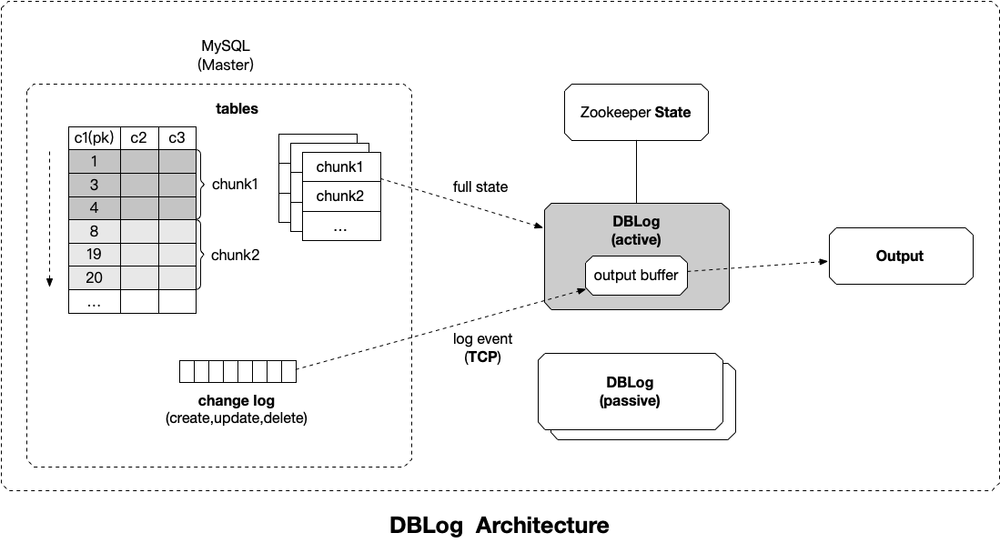

DBLog 是一个 java 框架，可以从数据库的事务日志中捕获变更行，也可以通过执行表 select 语句获得数据库的全量数据。
MySQL 主从同步原理

- Master 主库，启动 binlog 机制，将变更数据写入 binlog 文件。（binary log，记录的是二进制日志事件 log events，可以通过
show binlog events命令查看） - Slave (I/O thread)，从 Master 主库拉取 binlog 数据，将它拷贝到 Slave 的中继日志（relay log）中
- Slave (SQL thread)， 回放 relay log，更新从数据库以此来达到数据一致
注意，Master 主库一般会有多台 Slave 订阅，且 Master 主库要支持业务系统实时变更操作，服务器资源会有瓶颈。
CDC 工具比较
全量同步：
| 需求点 | Databus | Debezium | MaxWell | MySQLStreamer | DBLog |
|---|---|---|---|---|---|
| 任何时间点触发 | Yes | No | Yes | Unknown | Yes |
| 暂停与恢复 | Yes | No | No | Unknown | Yes |
| 日志事件处理不暂缓 | No | No | No | Yes | Yes |
| 保证历史数据顺序 | No | Yes | No | Yes | Yes |
| 不使用锁 | Yes | No | Yes | No | Yes |
| 无厂商定制化 | No | No | Yes | No | Yes |
DBLog

全量状态捕获

通过表的主键对表中的数据进行分片。假设每个 Chunk 的步长为 3 ，按照这个规则进行切分，只需要把这些 Chunk 的区间做成左开右闭或者左闭右开的区间，保证衔接后的区间能够等于表的主键区间即可。
Chunk2 的查询条件为 c1 > 4。
在 Zookeeper 中存储最新 Chunk 的最后一行，以便从最新的 Chunk 中暂停和恢复读取。
针对全量读取，DBLog 提出的算法叫做 Watermark-based Chunk Selection，通过在源数据库中维护一个单行单列的表作为信号表，在查询每个 chunk 数据前后分别更新该记录使得在事务日志中生产两个事件
lw（低水位）和 hw（高水位），然后将 select 数据和 [lw,hw] 之间的日志进行处理，获得该 chunk 的 point-in-time 为 hw 的一组数据。
Chunk 读取算法步骤：
- 暂停日志事件处理
- 更新 watermark 表的 uuid，生成 lw
- select chunk ，存储在内存中
- 更新 watermark 表的 uuid，生成 hw
- 恢复日志事件处理，输出接收到的日志事件，监听 low watermark event 到来
当接收到 low watermark event 时，去除内存中发生变化的数据主键。当接收到 high watermark event 时，拼接 chunk 中的剩余数据主键并输出。
定义一个 window 来处理 chunk 数据，写入 lw 时打开 window，写入 hw 时关闭 window。
举例一张表中包含主键 K1、k2、k3、k4、k5、k6，每一个 change log entry 都代表对主键的一个 create、update 或 delete 事件。
首先通过
SHOW MASTER STATUS获取当前 binlog 文件的偏移量当作 lw；然后通过 SELECT 读取全量数据的快照 snapshot ，在读取的过程中无锁操作，允许数据的插入和更新；
读取完快照 Snapshot ，再通过
SHOW MASTER STATUS获取当前 binlog 文件的偏移量当作 hw；
更新信号表分别生成 lw 和 hw，并通过 change log 接收到：
读取 lw ～ hw 中的数据集 delta，设置 Snapshot = Snapshot - delta；
窗口中发生变更的数据将被移除出内存，没有变更的数据将被拼接到 output buffer 中：
基于最新的 snapshot ，从 lw 开始消费 binlog ，执行 binlog 回放；
全量同步与增量同步交叉合并输出结果：
参考资料
MySQL Replication Protocol
DBLog: A Generic Change-Data-Capture Framework